Importing Spatial Data
Working with VoltRon objects
In this tutorial, we will cover some of the fundamental built-in functions of VoltRon to manage data, images and spatial information of assays. Here is the list of example datasets included in the Package.
data("visium_data")
data("melc_data")
data("xenium_data")
data("merged_object")Sample Metadata
The sample metadata is a summarized data frame which provides information on assays, layers and sample (tissue blocks) included in the VoltRon object. You can use the SampleMetadata function to call this table. The row names are the unique assay IDs, following assay types (e.g. Visium), layer name and Sample (typically a tissue block with multiple layers and assays).
SampleMetadata(visium_data)## Assay Layer Sample
## Assay1 Visium Section1 Anterior1Metadata
The Metadata function calls the metadata table of the main assay type (see vrMainAssay).
Metadata(visium_data)## id Count assay_id Assay Layer Sample
## AAAGGCTCTCGCGCCG-1_Assay1 AAAGGCTCTCGCGCCG-1_Assay1 39690 Assay1 Visium Section1 Anterior1
## AAATGGCCCGTGCCCT-1_Assay1 AAATGGCCCGTGCCCT-1_Assay1 33516 Assay1 Visium Section1 Anterior1
## AAATTACACGACTCTG-1_Assay1 AAATTACACGACTCTG-1_Assay1 12250 Assay1 Visium Section1 Anterior1
## AAGACATACGTGGTTT-1_Assay1 AAGACATACGTGGTTT-1_Assay1 31821 Assay1 Visium Section1 Anterior1
## ACCTACTATAAATCTA-1_Assay1 ACCTACTATAAATCTA-1_Assay1 41387 Assay1 Visium Section1 Anterior1
## ACGCGGGCCAAGGACA-1_Assay1 ACGCGGGCCAAGGACA-1_Assay1 48003 Assay1 Visium Section1 Anterior1You can also specify the assay ID or the assay type to call metadata of a subset of spatial points.
Metadata(visium_data, assay = "Visium")
Metadata(visium_data, assay = "Assay1")The type argument returns all spatial points of a given spatial point type (ROI, spot, cell, molecule or tile).
Metadata(visium_data, type = "spot")If the type argument is specified as all. Then this would return the VoltRon Metadata Object (vrMetadata)
Metadata(visium_data, type = "all")## VoltRon Metadata Object
## This object includes:
## 100 spotsSpatial Points
In a VoltRon object, spatial points are spatially defined entities with coordinates, segments which are of any of five assay types (ROI, spot, cell, molecule and tile).
The vrSpatialPoints function return the IDs of these entities for further downstream operations, such as subsetting etc.
vrSpatialPoints(visium_data)## [1] "AAAGGCTCTCGCGCCG-1_Assay1" "AAATGGCCCGTGCCCT-1_Assay1" "AAATTACACGACTCTG-1_Assay1"You can also specify the assay ID or the assay type to call metadata of a subset of spatial points.
vrSpatialPoints(visium_data, assay = "Visium")
vrSpatialPoints(visium_data, assay = "Assay1")## [1] "AAAGGCTCTCGCGCCG-1_Assay1" "AAATGGCCCGTGCCCT-1_Assay1" "AAATTACACGACTCTG-1_Assay1"Assays
The default (or main) assay of the VoltRon object is typically shown when printed (next to the assay name says “main” in paranthesis)
melc_data## VoltRon Object
## control_case_3:
## Layers: Section1
## Assays: MELC(Main)
## Features: main(Main)You can also call/get the name of the default (or main) using the vrMainAssay function
vrMainAssay(melc_data)## [1] "MELC"You can also set the main assay yourself, but only the assay types given in the Assay column of SampleMetadata(object).
SampleMetadata(melc_data)## Assay Layer Sample
## Assay1 MELC Section1 control_case_3vrMainAssay(melc_data) <- "MELC"You can also get the assay IDs associated with the main assay using vrAssayNames function.
vrAssayNames(melc_data)## [1] "Assay1"The assay type can be provided with the assay argument to get type specific assay IDs
vrAssayNames(melc_data, assay = "MELC")## [1] "Assay1"Coordinates and Segments
The vrCoordinates function is used to call the centroids of spots, cells and all other spatial points types with VoltRon objects.
vrCoordinates(visium_data)## x y z
## CCTTGACCACTTTATT-1_Assay1 463.78658 183.1497 0
## ATTTGTCTTGGGAGCT-1_Assay1 374.97419 275.8864 0
## TCACGCATTGTAGATC-1_Assay1 250.58520 319.1566 0
## CCGAGCTGTGCTTGTC-1_Assay1 474.47505 411.9449 0
## GCATGGGTACTGACGC-1_Assay1 87.10844 269.6902 0
## AGTCGGCCCAAACGAC-1_Assay1 215.00861 368.6231 0You can also specify the assay ID or the assay type to call coordinates of a subset of spatial points.
vrCoordinates(visium_data, assay = "Visium")
vrCoordinates(visium_data, assay = "Assay1")Each assay a VoltRon object may incorporate indefinite number of coordinate systems. One can look for these coordinate systems using the vrMainSpatial function, and select one of systems to call coordinates (see vrMainSpatial)
vrCoordinates(visium_data, spatial_name = "main")The reg option in the vrCoordinates function looks for a registered version of the main coordinate system and returns its coordinates (if there is any).
vrCoordinates(visium_data, spatial_name = "main", reg = TRUE)## Warning in .local(object, ...): There are no registered spatial systems with name main!## x y z
## CCTTGACCACTTTATT-1_Assay1 463.78658 183.1497 0
## ATTTGTCTTGGGAGCT-1_Assay1 374.97419 275.8864 0
## TCACGCATTGTAGATC-1_Assay1 250.58520 319.1566 0
## CCGAGCTGTGCTTGTC-1_Assay1 474.47505 411.9449 0
## GCATGGGTACTGACGC-1_Assay1 87.10844 269.6902 0
## AGTCGGCCCAAACGAC-1_Assay1 215.00861 368.6231 0The arguments of the vrSegments functions are identical to vrCoordinates and return a list of polygon corners associated with the coordinate system of the coordinates.
vrSegments(xenium_data)
vrSegments(xenium_data, assay = "Xenium")
vrSegments(xenium_data, assay = "Assay1")
vrSegments(xenium_data, spatial_name = "main")
vrSegments(xenium_data, spatial_name = "main", reg = TRUE)## $`171_Assay1`
## id x y
## 1 171 105.25 145.50
## 2 171 101.75 144.25
## 3 171 101.50 143.25
## 4 171 109.75 135.25
## 5 171 112.00 127.00
## 6 171 115.50 123.50
## 7 171 120.00 123.50
## 8 171 124.25 132.50
## 9 171 121.00 136.00
## 10 171 120.25 140.00
## 11 171 111.25 143.50
## 12 171 105.50 145.25
## 13 171 105.25 145.50
##
## $`180_Assay1`
## id x y
## 14 180 148.25 153.25
## 15 180 145.75 151.50
## 16 180 143.25 147.50
## 17 180 143.25 146.25
## 18 180 143.00 144.50
## 19 180 142.50 140.50
## 20 180 144.25 140.50
## 21 180 146.25 140.75
## 22 180 148.50 141.00
## 23 180 151.00 144.75
## 24 180 150.50 150.00
## 25 180 148.75 153.25
## 26 180 148.25 153.25Images and Coordinate Systems
Below we review some of the essential built-in functions to manipulate and manage images of a VoltRon object as well as the coordinate systems that are associated with these images.
Spatial Coordinate Systems
In a VoltRon object, each image has a unique ID which is also associated with a coordinate (or spatial) system. The names of these spatial systems can be called using the vrSpatialNames function.
vrSpatialNames(visium_data)## [1] "main"You can also specify the assay ID or the assay type to call image names of a subset assays or any assay type (see Sample Metadata)
vrSpatialNames(visium_data, assay = "Visium")
vrSpatialNames(visium_data, assay = "Assay1")## [1] "main"If you want to see the list of all spatial systems associated with all assays of the main assay type, you can call the vrMainSpatial function.
vrMainSpatial(visium_data)## Assay Spatial
## 1 Assay1 mainYou can also specify the assay ID or the assay type to call spatial system names of a subset assays or any assay type (see Sample Metadata)
vrMainSpatial(visium_data, assay = "Visium")
vrMainSpatial(visium_data, assay = "Assay1")## Assay Spatial
## 1 Assay1 mainChannel Names
Each spatial system object (vrSpatial) in VoltRon object can also include an indefinite number of channels which you can get (or request) a list of for further use.
vrImageChannelNames(melc_data)
vrImageChannelNames(melc_data, assay = "MELC")
vrImageChannelNames(melc_data, assay = "Assay1")## Assay Layer Sample Spatial Channels
## Assay1 MELC Section1 control_case_3 MELC DAPI,CD45Get and Set Images
In VoltRon, images can be called specifically, or return as a list. The return image is of a magick image object (see magick package)
vrImages(visium_data)
vrImages(visium_data, assay = "Visium")
vrImages(visium_data, assay = "Assay1")## Warning: `aes_string()` was deprecated in ggplot2 3.0.0.
## ℹ Please use tidy evaluation idioms with `aes()`.
## ℹ See also `vignette("ggplot2-in-packages")` for more information.
## ℹ The deprecated feature was likely used in the magick package.
## Please report the issue at <https://github.com/ropensci/magick/issues>.
## This warning is displayed once every 8 hours.
## Call `lifecycle::last_lifecycle_warnings()` to see where this warning was generated.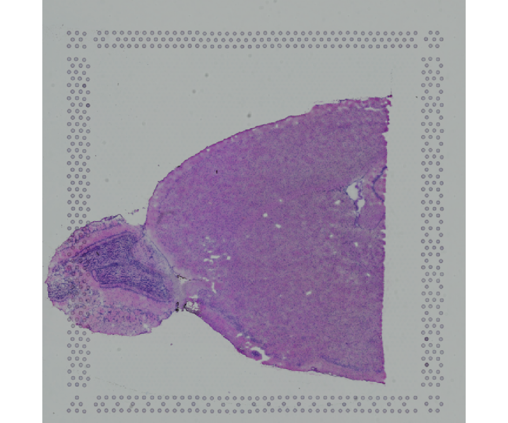
Once you know the name of a specific channel, you can the image of a specific channel by providing the name and the associated channel.
vrImages(melc_data, name = "MELC", channel = "DAPI")
You can set up the main channel as well as the main spatial system name for later use.
vrMainSpatial(melc_data, assay = "Assay1") <- c("MELC", "CD45")
vrImages(melc_data)
You can also resize the images as they are being returned. This is usually used for visualization purposes and helps speeding up visualization for large images. This is accomplished with scale.perc argument.
vrImages(melc_data, scale.perc = 25)Combining Image Channels
VoltRon even allows manipulation of channel images if you also provide an associate list of colors.
melc_data <- combineChannels(melc_data,
channels = c("DAPI", "CD45"), colors = c("grey", "green"),
channel_key = "combined")These new images can be stored as new channels within the same image object, and called later again
vrImageChannelNames(melc_data)## Assay Layer Sample Spatial Channels
## Assay1 MELC Section1 control_case_3 MELC DAPI,CD45,combinedvrImages(melc_data, channel = "combined")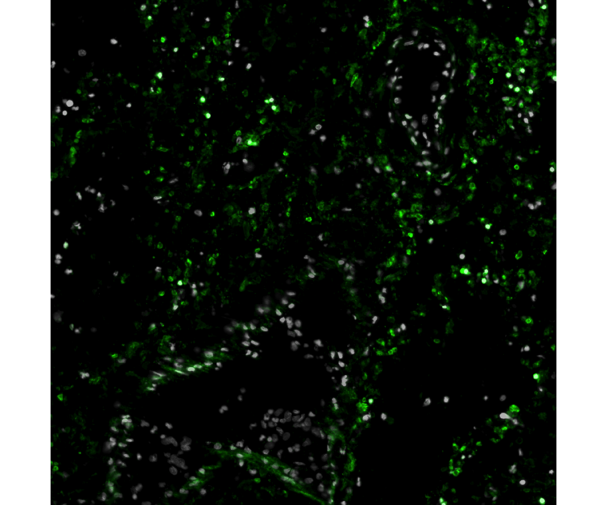
Feature Matrix (Data)
vrData(visium_data)[3:8,3:5]## AAATTACACGACTCTG-1_Assay1 AAGACATACGTGGTTT-1_Assay1 ACCTACTATAAATCTA-1_Assay1
## Gm19938 0 0 0
## Gm37381 0 0 0
## Rp1 0 0 0
## Sox17 0 1 1
## Gm37587 0 0 0
## Gm37323 0 0 0vrData(visium_data, norm = TRUE)[3:8,3:5]## AAATTACACGACTCTG-1_Assay1 AAGACATACGTGGTTT-1_Assay1 ACCTACTATAAATCTA-1_Assay1
## Gm19938 0 0.0000000 0.0000000
## Gm37381 0 0.0000000 0.0000000
## Rp1 0 0.0000000 0.0000000
## Sox17 0 0.2732722 0.2164184
## Gm37587 0 0.0000000 0.0000000
## Gm37323 0 0.0000000 0.0000000Embeddings
You can parse and even set individual embedding elements in a VoltRon object.
vrEmbeddingNames(xenium_data)## [1] "pca" "umap"You can use these names of get the associated embedding dataset from the object.
vrEmbeddings(xenium_data, type = "umap")## x y
## 171_Assay1 -7.110343 0.451607
## 180_Assay1 5.333756 3.896294
## 182_Assay1 3.805085 4.581084
## 185_Assay1 5.330851 3.870111
## 197_Assay1 -4.397479 2.763229
## 206_Assay1 -1.753468 3.973698You can also set and create new embedding elements in the voltron object. In this case, you have to make sure that the row names should match with the targeted spatial points.
new_umap_data <- vrEmbeddings(xenium_data, type = "umap")
vrEmbeddings(xenium_data, type = "new_umap") <- new_umap_data*2Now we can observe changes to the new embedding data.
vrEmbeddings(xenium_data, type = "new_umap")## x y
## 171_Assay1 -14.220687 0.903214
## 180_Assay1 10.667511 7.792587
## 182_Assay1 7.610170 9.162168
## 185_Assay1 10.661703 7.740223
## 197_Assay1 -8.794958 5.526458
## 206_Assay1 -3.506937 7.947396You can choose individual assay names or assay classes.
vrEmbeddings(xenium_data, type = "umap", assay = "Xenium")
vrEmbeddings(xenium_data, type = "pca", assay = "Assay1")Subsetting VoltRon objects
sample/assay
VoltRon object can be subsetted in a variety of ways using assay names, sample names, spatial point names, features (e.g. gene), image coordinates (crop boxes or bounding boxes) as well as interactively.
visium_data_subset <- subset(visium_data, assays = "Assay1")visium_data_subset <- subset(visium_data, samples = "Anterior1")
visium_data_subset## VoltRon Object
## Anterior1:
## Layers: Section1
## Assays: Visium(Main)
## Features: RNA(Main)spatial points
You can use a list of spatial points (typically using vrSpatialPoints function, see vrSpatialPoints)
selected_points <- vrSpatialPoints(visium_data)
selected_points[1:20]## [1] "AAAGGCTCTCGCGCCG-1_Assay1" "AAATGGCCCGTGCCCT-1_Assay1" "AAATTACACGACTCTG-1_Assay1"visium_data_subset <- subset(visium_data, spatialpoints = selected_points[1:20])
visium_data_subset## VoltRon Object
## Anterior1:
## Layers: Section1
## Assays: Visium(Main)
## Features: RNA(Main)features
You can select a few number of features and subset the features given this list. However, it would only subset the main assay (see vrMainAssay)
selected_features <- vrFeatures(visium_data)
selected_features[1:20]## [1] "Xkr4" "Gm1992" "Gm19938" "Gm37381" "Rp1" "Sox17" "Gm37587" "Gm37323" "Mrpl15"
## [10] "Lypla1" "Tcea1" "Rgs20" "Gm16041" "Atp6v1h" "Oprk1" "Npbwr1" "Rb1cc1" "4732440D04Rik"
## [19] "Alkal1" "St18"visium_data_subset <- subset(visium_data, features = selected_features[1:20])
vrFeatures(visium_data_subset)## [1] "Xkr4" "Gm1992" "Gm19938" "Gm37381" "Rp1" "Sox17" "Gm37587" "Gm37323" "Mrpl15"
## [10] "Lypla1" "Tcea1" "Rgs20" "Gm16041" "Atp6v1h" "Oprk1" "Npbwr1" "Rb1cc1" "4732440D04Rik"
## [19] "Alkal1" "St18"Interactive subsetting
VoltRon allows interactively subsetting spatial data. Using the argument interactive = TRUE, a mini Shiny app is triggered where users can select a bounding box to crop the spatial data.
visium_data_subset_info <- subset(visium_data, interactive = TRUE)
visium_data_subset <- visium_data_subset_info$subsets[[1]]VoltRon Object
Anterior1_subset:
Layers: Section1
Assays: Visium(Main) vrImages(visium_data_subset)Visualization
VoltRon provides visualization utilities for both spatial and embedding level visualizations.
Spatial Plots
vrSpatialPlot is the main function for visualize labels and identities of cells. This information is parsed from the Metadata of the main assay (see vrMainAssay). The users can also specify the assay.
vrSpatialPlot(xenium_data, group.by = "clusters")
You can also visualize the segments of spatial points and even get the segments transparent
vrSpatialPlot(xenium_data, group.by = "clusters", plot.segments = TRUE, alpha = 0.6)
The background color can be set to any color.
vrSpatialPlot(xenium_data, group.by = "clusters", plot.segments = TRUE,
background.color = "white")
In cases where there are multiple coordinate systems, you can get the background set to the name of the image (or coordinate system). You can get the name of these images from vrSpatialNames.
If also want to select a channel from the same coordinate system, you can set background argument as a vector of 2 where first is the name of the image (coordinate system) and the other would be channel name. You can get the name of these channels from vrImageChannelNames.
vrSpatialPlot(xenium_data, group.by = "clusters", plot.segments = TRUE,
spatial = "main")
vrSpatialPlot(xenium_data, group.by = "clusters", plot.segments = TRUE,
spatial = "main", channel = "DAPI")If the visualized assay is of a type “spot”, you can crop the image to encapsulate the smallest subset that include all spots.
vrSpatialPlot(visium_data, group.by = "Sample", crop = TRUE)
The vrSpatialFeaturePlot functions the same way as vrSpatialPlot but requires extra arguments such as features for selecting features, norm for normalized expression (default), and log for log transformed counts.
vrSpatialFeaturePlot(visium_data, features = "Count")
vrSpatialFeaturePlot(visium_data, features = "Stat1", norm = TRUE)
For all variations of vrSpatialPlot and vrSpatialFeaturePlot functions above, you can specifiy the assay names or assay class.
vrSpatialPlot(visium_data, assay = "Visium", plot.segments = TRUE)
vrSpatialPlot(visium_data, assay = "Assay1", plot.segments = TRUE)
vrSpatialFeaturePlot(visium_data, assay = "Visium", features = "Count")
vrSpatialFeaturePlot(visium_data, assay = "Assay1", features = "Count")vrSpatialPlot will allow you to visualize multiple data types within a single VoltRon object. We use our multi data type VoltRon object.
data(merged_object)
merged_object## VoltRon Object
## Block:
## Layers: Section1 Section2 Section3
## Assays: CellAssay(Main) MolAssay ROIAssay
## Features: main(Main)Given the description in the VoltRon object, we can call the molecule assay for plotting.
vrSpatialPlot(merged_object, assay = "MolAssay", group.by = "gene")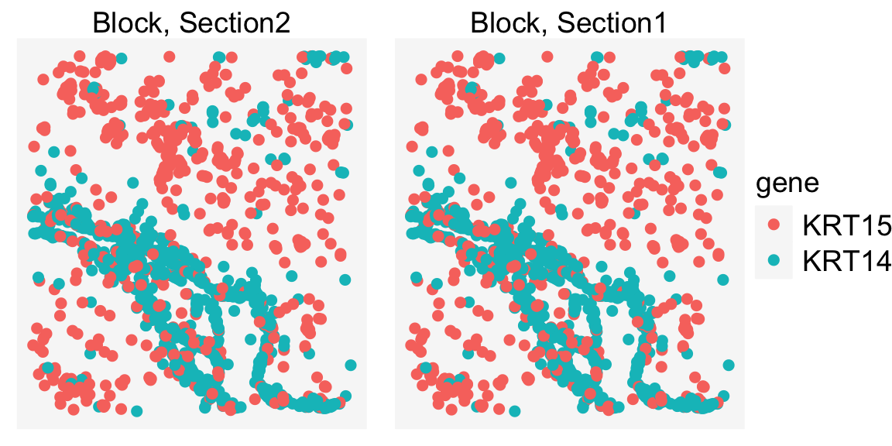
Now, let us do the same with the ROI Assay.
vrSpatialPlot(merged_object, assay = "ROIAssay", group.by = "annotation")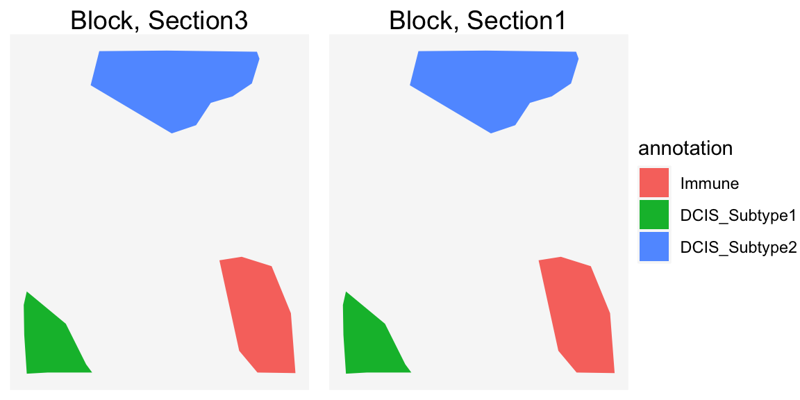
Rasterization
VoltRon provides automated rasterization of the data to increase speed. However, users can manually define the rasterization parameter while visualizing the data to create customized density graphs of observations. We use the n.tile argument for that. Given the value of the argument, the plot will be divided into chunks along both x and y axis.
vrSpatialPlot(merged_object, group.by = "clusters", n.tile = 40)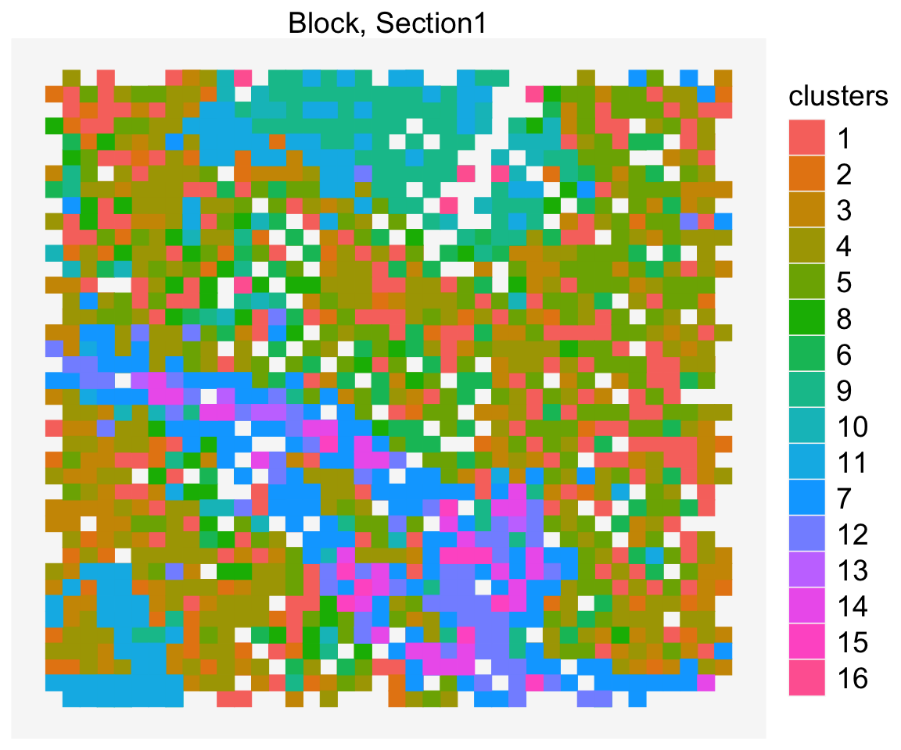
This apply to molecule datasets too.
vrSpatialPlot(merged_object, assay = "MolAssay", group.by = "gene", n.tile = 40)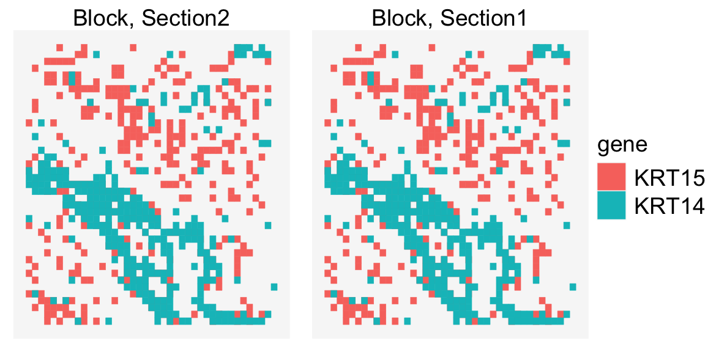
Multi-Layer Spatial Plots
vrSpatialPlot function can be paired with the addSpatialLayer function to add additional assays of the same spatial coordinate system as the original assay. We use the piping operator “|>” to connect to functions which overlays the results of the first image with the second. addSpatialLayer will check if two assays are within the same tissue block and coordinate system, and will overlay these assays if thats the case.
This utility can be used to visualize molecules along with cell segments. Here we can also color each individual molecule (gene) type.
library(ggnewscale)vrSpatialPlot(merged_object, plot.segments = TRUE, group.by = "clusters") |>
addSpatialLayer(merged_object, assay = "Assay2", group.by = "gene", alpha = 1,
colors = list(KRT15 = "blue", KRT14 = "green"))## Warning: Duplicated `override.aes` is ignored.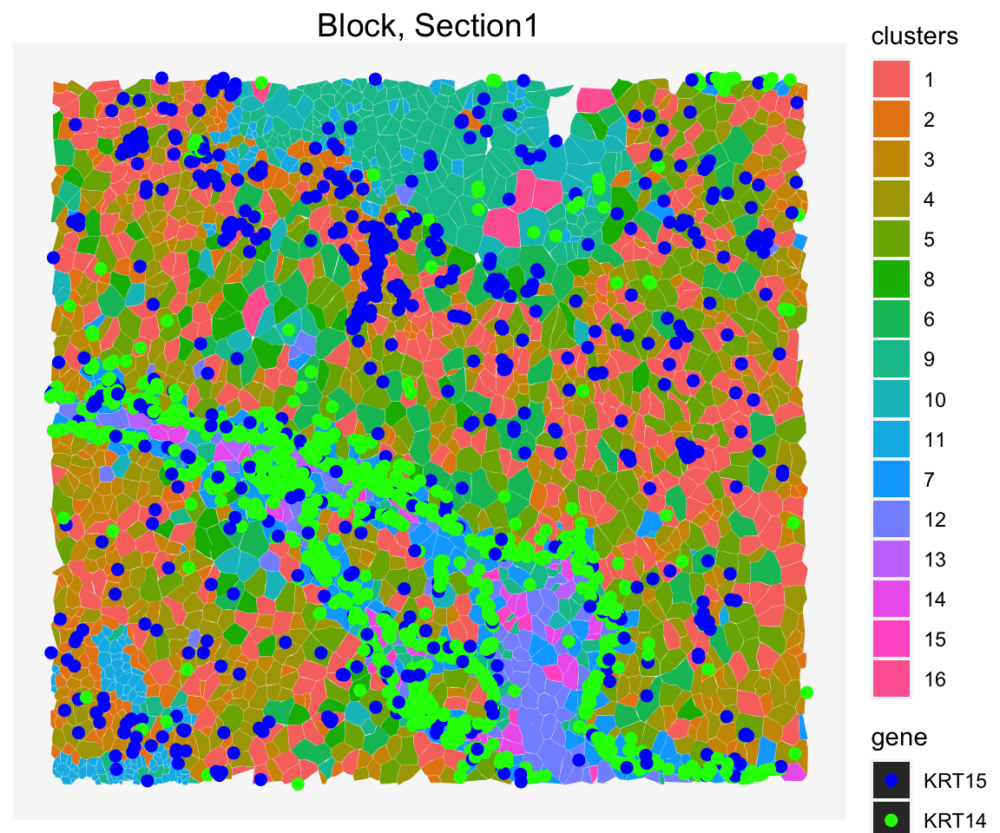
You can also visualize the segments that represents annotations of the tissue sections along with the cells.
vrSpatialPlot(merged_object, plot.segments = FALSE, group.by = "clusters") |>
addSpatialLayer(merged_object, assay = "Assay3", group.by = "annotation", alpha = 0.6,
group.ids = c("Immune", "DCIS_Subtype1"),
color = list(Immune = "blue", DCIS_Subtype1 = "yellow"))## Warning: Duplicated `override.aes` is ignored.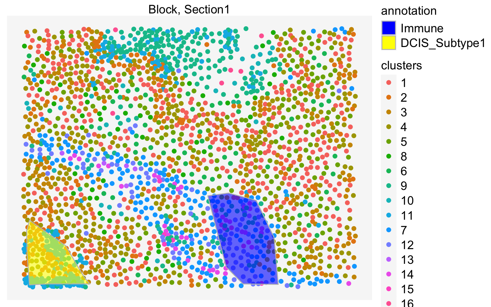
Combine Features/Groups
At any time, given two features or groups, these two entries can be combined into a single graph.
To visualize, the expression of two features in a single graph, you can simply provide combine.features=TRUE. The function won’t work with features more than two.
data("xenium_data")
vrSpatialFeaturePlot(xenium_data, features = c("ACTA2", "TACSTD2"),
norm = TRUE, combine.features = TRUE)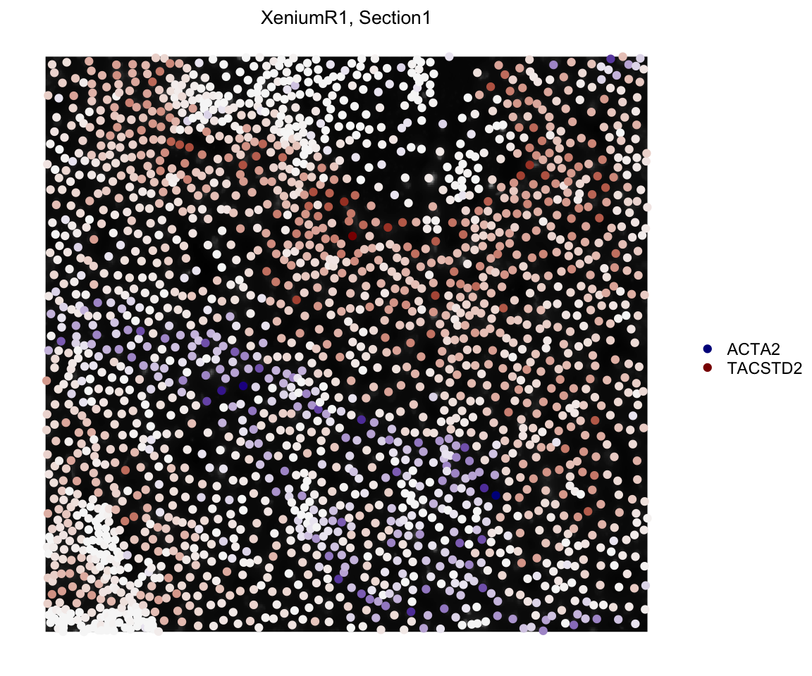
Similarly, we can apply this to embedding plots too.
data("xenium_data")
vrEmbeddingFeaturePlot(xenium_data, features = c("ACTA2", "TACSTD2"),
embedding = "umap", combine.features = TRUE)## Warning in plot_theme(plot): The `x` theme element is not defined in the element hierarchy.## Warning in plot_theme(plot): The `y` theme element is not defined in the element hierarchy.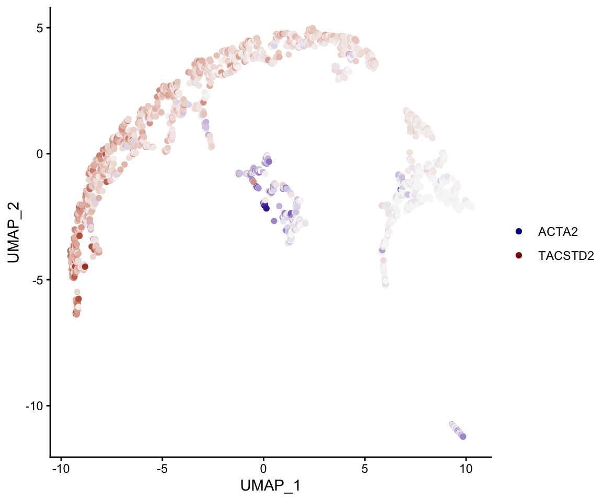
In order to visualize the density of two molecule per each tile, you can define a tiling parameter n.tile and also enter combine.graphs=TRUE.
data("merged_object")
vrSpatialPlot(merged_object, assay = "Assay2", group.by = "gene",
n.tile = 50, combine.groups = TRUE, group.ids = c("KRT14", "KRT15"))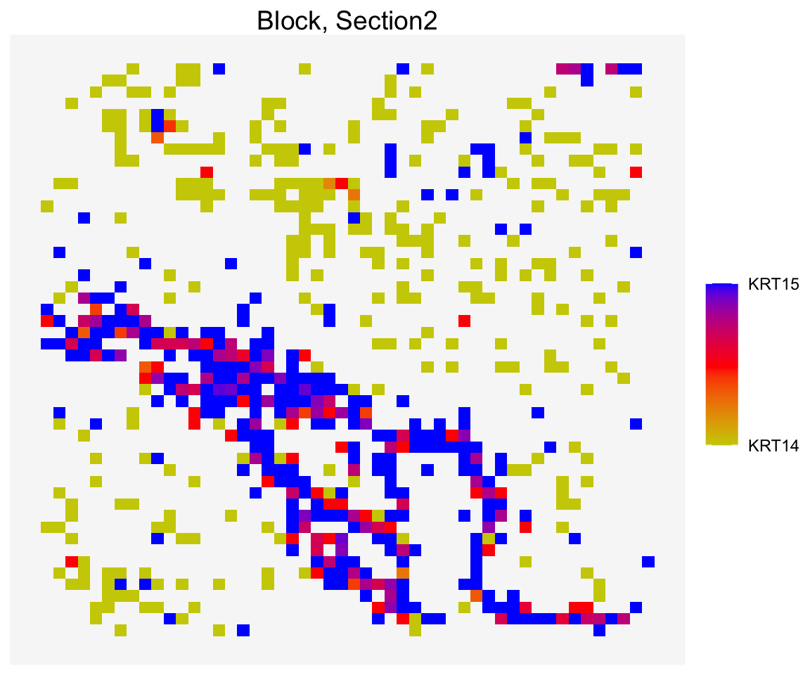
Embedding Plots
Dimensional reduction and embedding features are also possible for the VoltRon objects.
vrEmbeddingPlot(xenium_data, embedding = "umap", group.by = "clusters", label = T)
The vrEmbeddingFeaturePlot functions the same way as vrEmbeddingPlot but requires extra arguments such as features for selecting features, norm for normalized expression (default), and log for log transformed counts.
vrEmbeddingFeaturePlot(xenium_data, embedding = "umap", features = "Count")
vrEmbeddingFeaturePlot(xenium_data, embedding = "umap", features = "KRT5", norm = FALSE)
For all variations of vrEmbeddingPlot and vrEmbeddingFeaturePlot functions above, you can specifiy the assay names or assay class.
vrEmbeddingPlot(xenium_data, assay = "Xenium", embedding = "umap")
vrEmbeddingPlot(xenium_data, assay = "Assay1", embedding = "umap")
vrEmbeddingFeaturePlot(xenium_data, assay = "Xenium", embedding = "umap", features = "Count")
vrEmbeddingFeaturePlot(xenium_data, assay = "Assay1", embedding = "umap", features = "Count")